Библиотека / Library
Eleven Stories covering free reading, choosing texts, word lookup, saved vocabulary, flashcards and chapter continuation, with complete Russian copy and English translations. Cover name: Библиотека means Library.
Use the PNGs in exports for posting. Individual editable SVGs are in editable. Native Affinity import remains unverified.
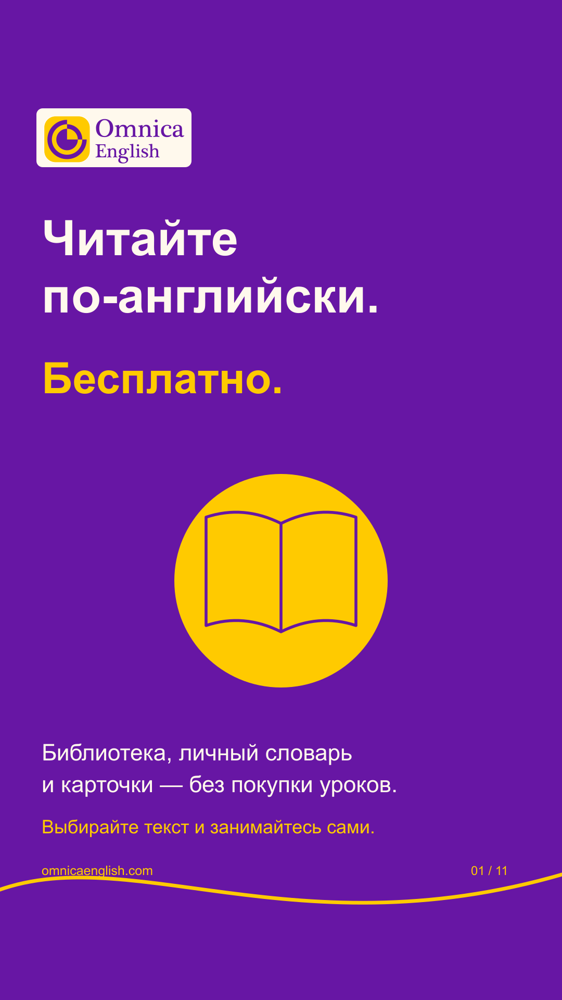
Story 1
Читайте по-английски.
Read in English.
Библиотека, личный словарь и карточки — без покупки уроков.
The library, personal word list and flashcards — without buying lessons.
Выбирайте текст и занимайтесь сами.
Choose a text and practise independently.
omnicaenglish.com
omnicaenglish.com
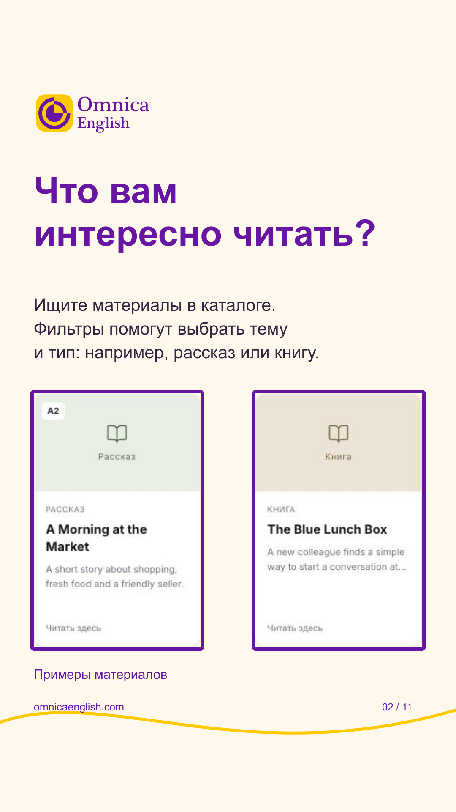
Story 2
Что вам интересно читать?
What would you enjoy reading?
Ищите материалы в каталоге. Фильтры помогут выбрать тему и тип: например, рассказ или книгу.
Search for materials in the catalogue. Filters help you choose a topic and a type, such as a story or book.
Примеры материалов
Example materials
omnicaenglish.com
omnicaenglish.com
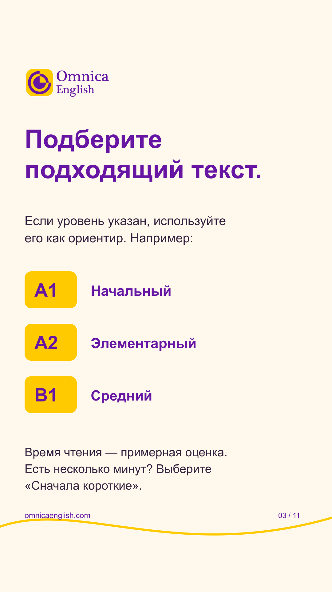
Story 3
Подберите подходящий текст.
Find a suitable text.
Если уровень указан, используйте его как ориентир. Например:
If a level is shown, use it as a guide. For example:
Время чтения — примерная оценка. Есть несколько минут? Выберите «Сначала короткие».
Reading time is an estimate. Have a few minutes? Choose “Shortest first”.
omnicaenglish.com
omnicaenglish.com
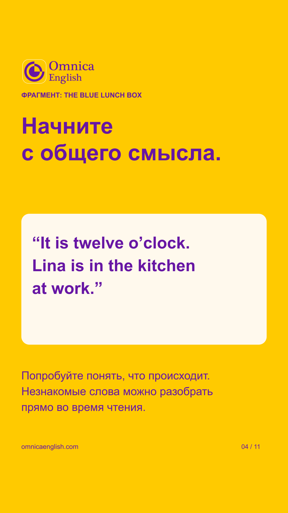
Story 4
ФРАГМЕНТ: THE BLUE LUNCH BOX
EXCERPT: THE BLUE LUNCH BOX
Начните с общего смысла.
Start with the overall meaning.
“It is twelve o’clock. Lina is in the kitchen at work.”
“It is twelve o’clock. Lina is in the kitchen at work.”
Попробуйте понять, что происходит. Незнакомые слова можно разобрать прямо во время чтения.
Try to understand what is happening. You can look up unfamiliar words as you read.
omnicaenglish.com
omnicaenglish.com
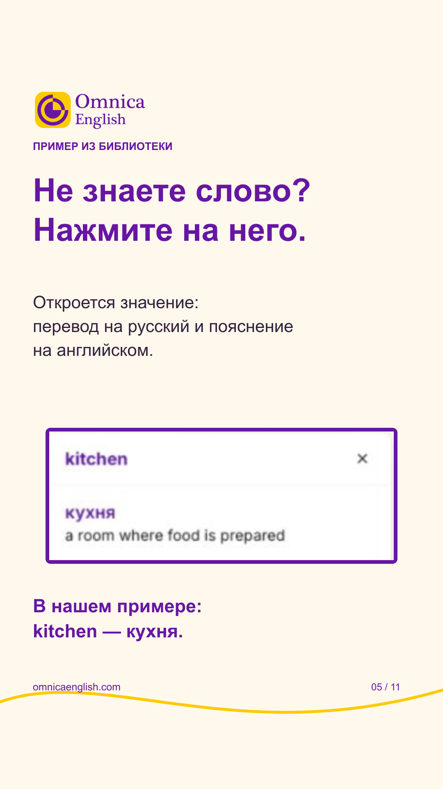
Story 5
ПРИМЕР ИЗ БИБЛИОТЕКИ
LIBRARY EXAMPLE
Не знаете слово? Нажмите на него.
Don’t know a word? Tap it.
Откроется значение: перевод на русский и пояснение на английском.
Its meaning opens: a Russian translation and an English explanation.
В нашем примере: kitchen — кухня.
In our example: kitchen means кухня (“kitchen”).
omnicaenglish.com
omnicaenglish.com
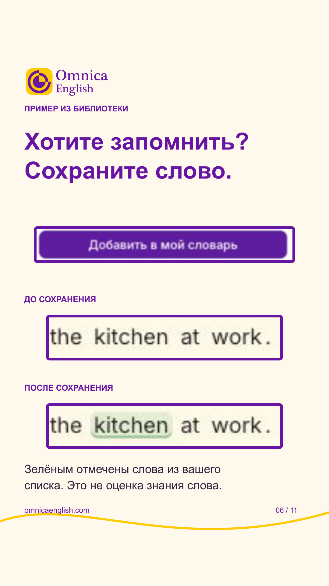
Story 6
ПРИМЕР ИЗ БИБЛИОТЕКИ
LIBRARY EXAMPLE
Хотите запомнить? Сохраните слово.
Want to remember it? Save the word.
ДО СОХРАНЕНИЯ
BEFORE SAVING
ПОСЛЕ СОХРАНЕНИЯ
AFTER SAVING
Зелёным отмечены слова из вашего списка. Это не оценка знания слова.
Green marks words on your list. It does not measure how well you know them.
omnicaenglish.com
omnicaenglish.com
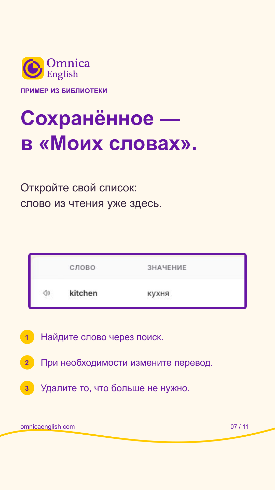
Story 7
ПРИМЕР ИЗ БИБЛИОТЕКИ
LIBRARY EXAMPLE
Сохранённое — в «Моих словах».
Everything you save is in “My Words”.
Откройте свой список: слово из чтения уже здесь.
Open your word list: the word from your reading is already here.
Найдите слово через поиск.
Find a word using search.
При необходимости измените перевод.
Edit its translation if needed.
Удалите то, что больше не нужно.
Remove what you no longer need.
omnicaenglish.com
omnicaenglish.com
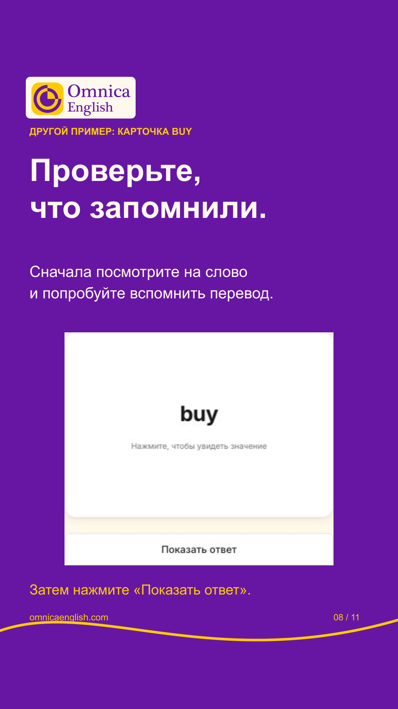
Story 8
ДРУГОЙ ПРИМЕР: КАРТОЧКА BUY
ANOTHER EXAMPLE: THE BUY FLASHCARD
Проверьте, что запомнили.
Check what you remember.
Сначала посмотрите на слово и попробуйте вспомнить перевод.
First look at the word and try to recall its translation.
Затем нажмите «Показать ответ».
Then tap “Show answer”.
omnicaenglish.com
omnicaenglish.com
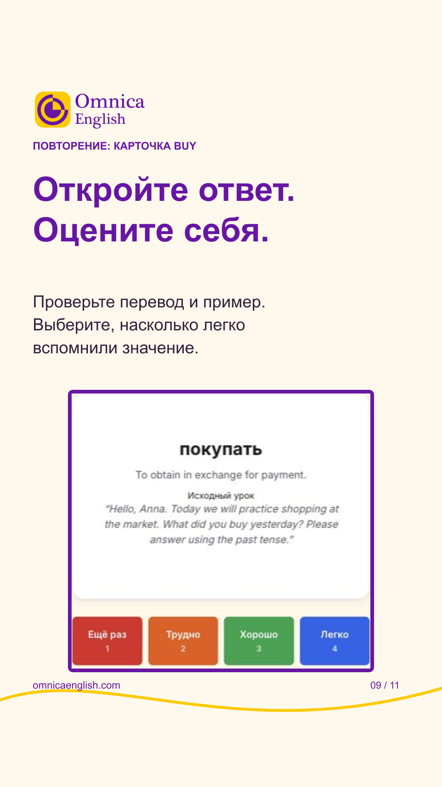
Story 9
ПОВТОРЕНИЕ: КАРТОЧКА BUY
REVIEW: THE BUY FLASHCARD
Откройте ответ. Оцените себя.
Reveal the answer. Rate your recall.
Проверьте перевод и пример. Выберите, насколько легко вспомнили значение.
Check the translation and example. Choose how easily you recalled the meaning.
omnicaenglish.com
omnicaenglish.com
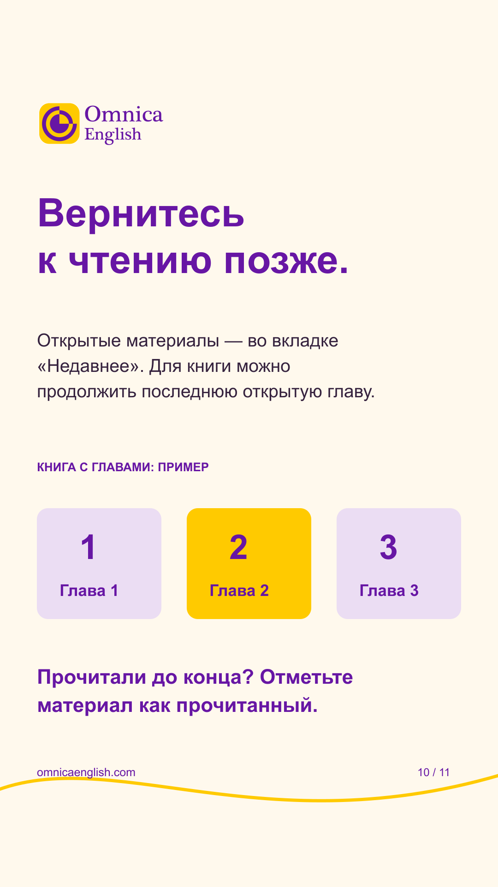
Story 10
Вернитесь к чтению позже.
Return to your reading later.
Открытые материалы — во вкладке «Недавнее». Для книги можно продолжить последнюю открытую главу.
Opened materials appear under “Recent”. For a book, you can continue the last chapter you opened.
КНИГА С ГЛАВАМИ: ПРИМЕР
A BOOK WITH CHAPTERS: ILLUSTRATION
Прочитали до конца? Отметьте материал как прочитанный.
Finished reading? Mark the material as read.
omnicaenglish.com
omnicaenglish.com
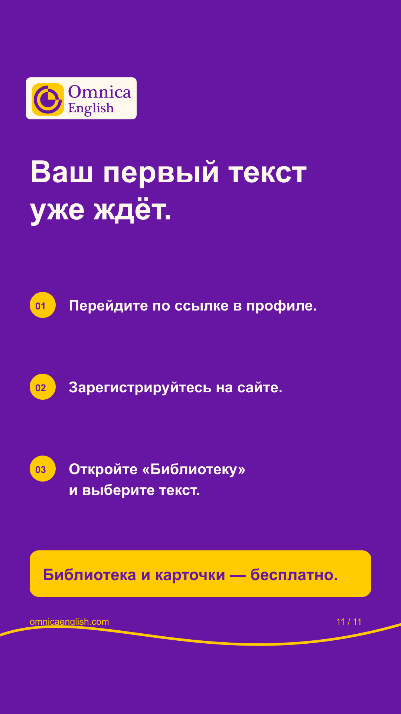
Story 11
Ваш первый текст уже ждёт.
Your first text is waiting.
Перейдите по ссылке в профиле.
Follow the link in our profile.
Зарегистрируйтесь на сайте.
Register on the website.
Откройте «Библиотеку» и выберите текст.
Open “Library” and choose a text.
Библиотека и карточки — бесплатно.
The library and flashcards are free.
omnicaenglish.com
omnicaenglish.com
Screenshots are real fictional-QA demonstrations. The kitchen reading sequence and the separately labelled buy flashcard are different examples. No current catalogue size or learning outcome is promised.
Translations of Russian text inside screenshot crops and posting notes: complete copy document.